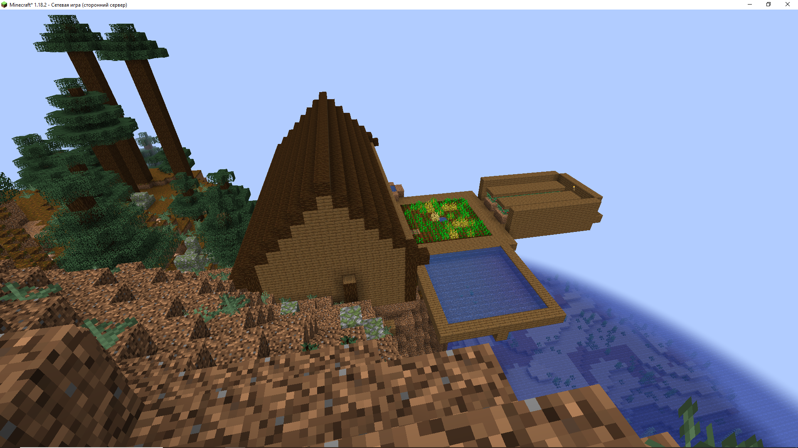
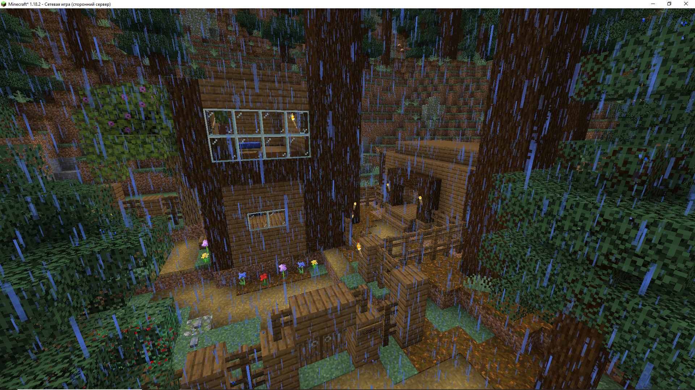
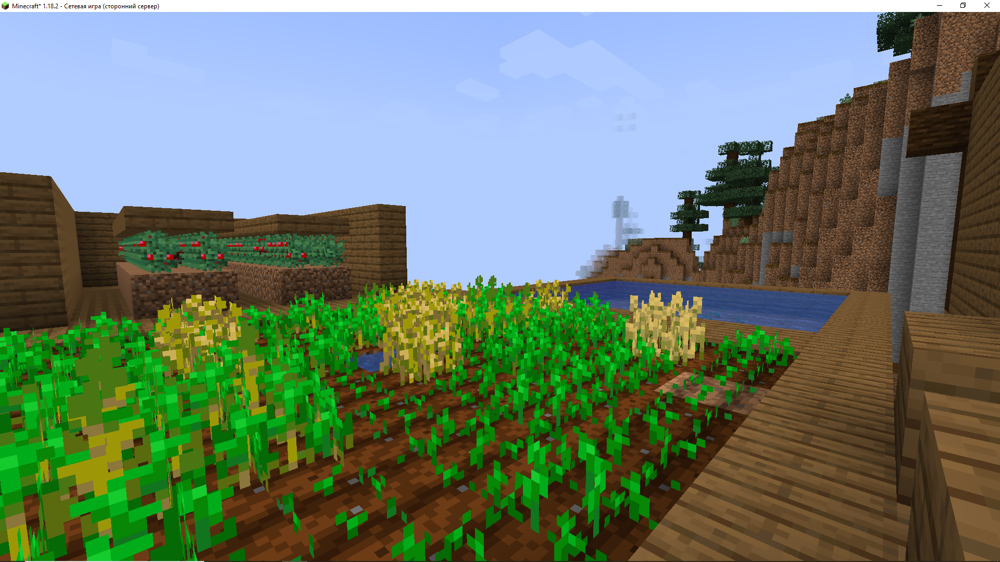
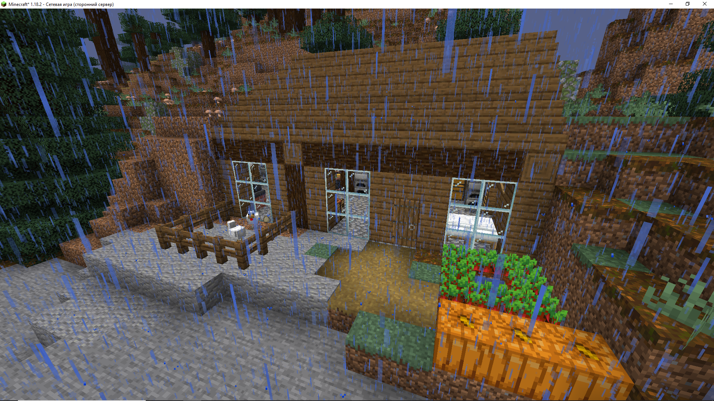
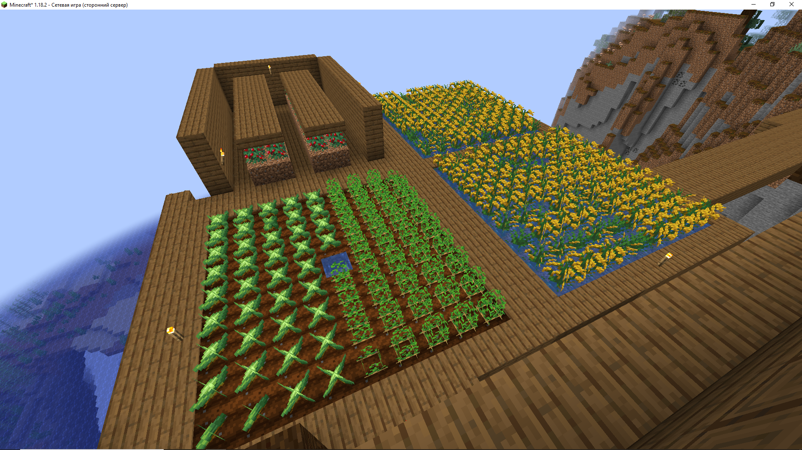
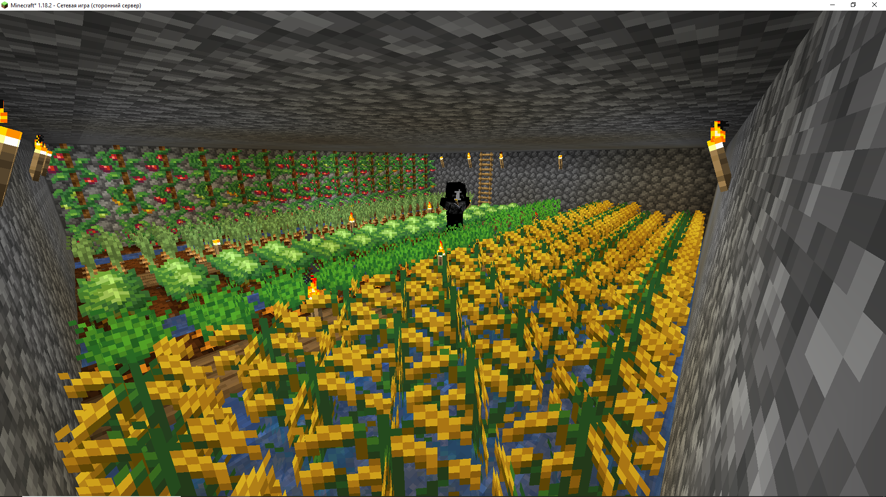
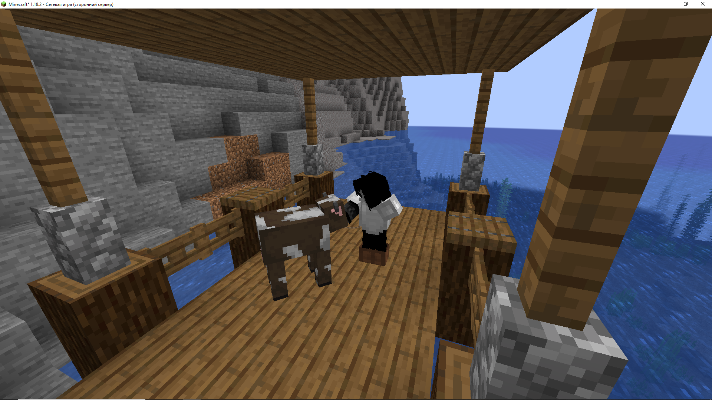
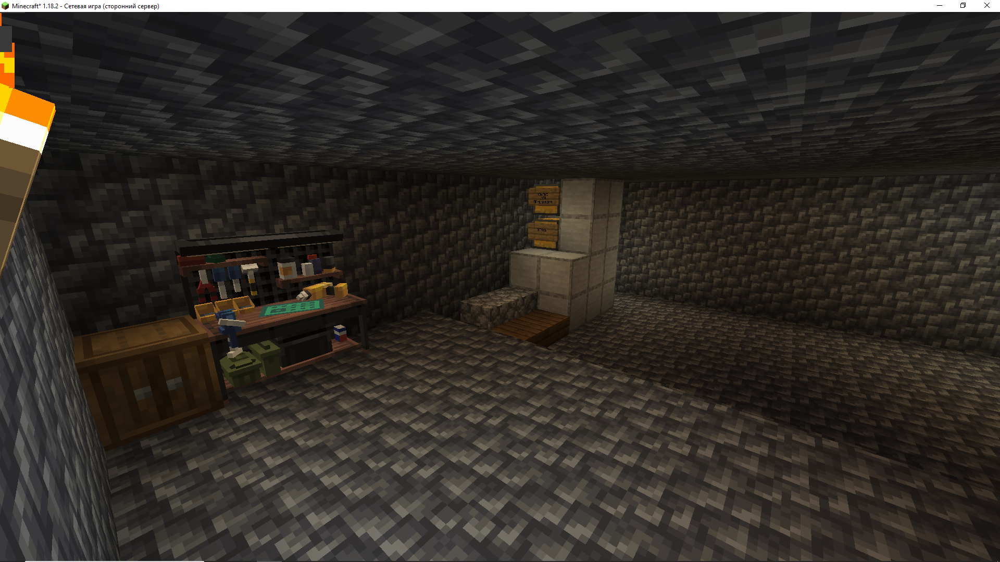
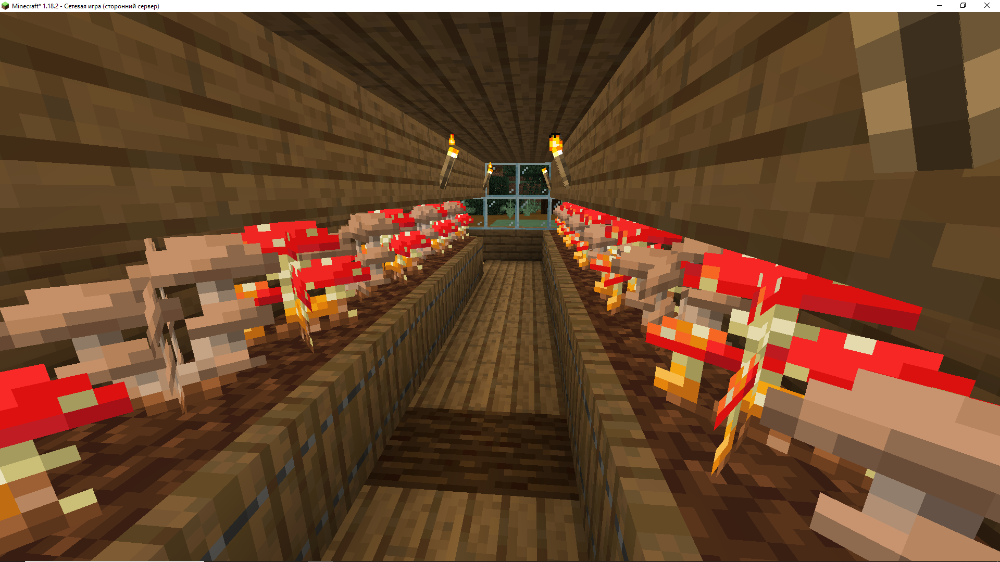
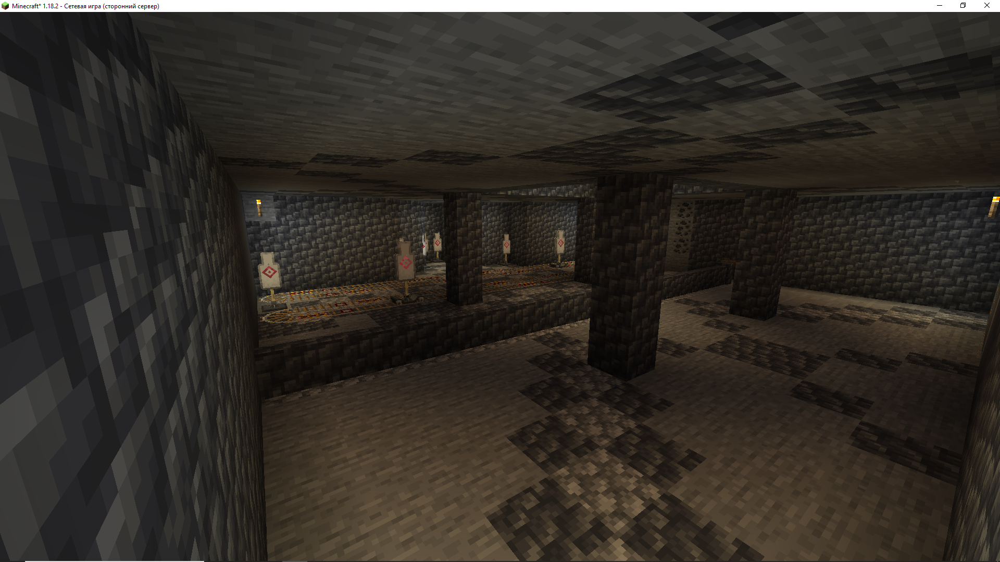

Состояние сервера
Неактивно
Текущий IP: 127.0.0.1
Хосты
Модификации
Дни рождения
Загрузка...
00:00:00:00
Статистика
Команда существует: Загрузка...
Администрация: Загрузка...
Участников: Загрузка...
Информация о сервере
Кланы
N/A
N/A
- [BANNED-USER]
Роли
| Участник | Роль |
|---|---|
| по | па |
| N/A | N/A |
Постройки
Дом George_Goodman
Типо мэрия
- George_Goodman
Дом zavnes
Милый домик с сараем
- zavnes
Мэрская ферма пшеницы
Самая большая ферма размером в 9 секторов
- George_Goodman
Семейный дом annihiliator и mabaebab
Модное жилище единственной и самой образцовой пары сервера, оснащенное кухней, складом и двумя фермами.
- annihiliator, mabaebab
Мэрская ферма
Первая ферма сервера, основной источник риса и ягод
- George_Goodman
Подвальная ферма annihiliator
Небольшая, но очень разнообразная ферма под домом
- annihiliator
Деревянная пристань
Пристань для лодок, выходящая к северо-западному морю.
- annihiliator
Оружейный подвал
Подвальное помещение с авто-плавильной печью и оружейной мастерской
- George_Goodman
Грибная ферма annihiliator
Самая большая на сервере ферма по выращиванию грибных колоний
- annihiliator
Мэрский тир
Тир, построенный для снятие пара в свободное от рутины и бытия время
- George_Goodman